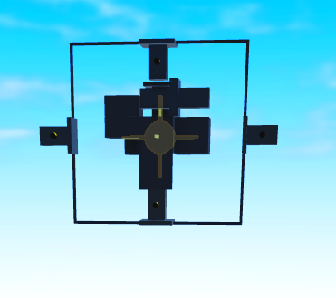

Gyro Cores
Gyro cores are one of the four main shredder types (OG, Gyro, Balljoint, Omni). They function by using motor2s that rotate off of an axis lock, like omnis. For the axis locks of gyro cores, read TODO ADD AXIS LOCK PAGE LINK HERE.
1x1 Gyro Cores


A 1x1 gyro core is a development of the older 1x1.5 gyro cores after Plane Crazy added the Collisions setting to both motor types. The two variants are 1x1 rigid and 1x1 non-rigid, rigid is more complex but better and non-rigid is easier but worse. Having 2 motors for rigidity is also considered redundancy
Benefits
1x1 cores are objectively better than their older versions. They are simpler than 1x1.5 cores, more centeralised (which gives you a smaller hitbox and less damage taken), and make armor more efficient.
These cores only require one armor module to function, and also do not have any collisions with the core. This reduces contacts and lag, while making armoring simpler as you can fill the core with armor without issue.
Rigid/Non-Rigid
Rigid cores are the better variant of 1x1 cores. They work by having motors on both sides of an axis and prevent rotational forces when your blade impacts something. The difference in clipping is huge due to the core allowing you to use torque much more effectively.
Non-Rigid cores are simpler to make, only requiring two redundancy stacks pulled into the same block. They are unable to clip blades through terrain however, due to the force just rotating the core away.
Building
There are a few ways to create rigid cores, some are simpler and some are more optimised. Here are two tutorials on both variants of the 1x1 gyro core.
1x1.5 Gyro Cores (deprecated)

1x1.5 gyro cores were a complex gyro core that used precise locking to create a small core without the existence of collision off motors. They were used in old modern designs and were replaced when motors were updated to have a no collision option.
.
.
3x5 Gyro Cores (deprecated)

The 3x5 Gyro is a staple in the shredder community if not the PC community as a whole, but due to new advancments in the building of gyros they are considered deprecated for any pvp use being favored for the 1x1.
It is a descendant of the ANO core, after the addition of gyro blocks. The 3x5 was used for modern era gyro cores and is used today primarily by Smirkcat tutorial builders.
.
.
ANO Cores (deprecated)

ANO core is the ancestor of gyro cores, it used the force of prismatic constraints within pistons to create an axis locking force before gyro blocks were added. This core is extremely old and probably completely unused.